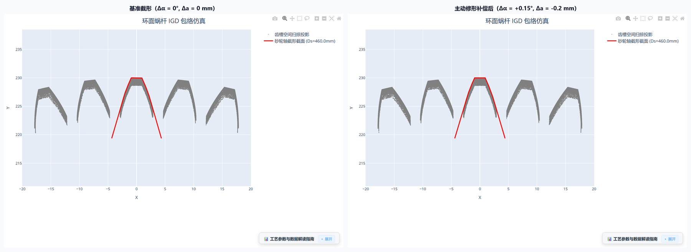

6.3 案例三：标准渐开线蜗杆接触斑点主动修形补偿
在实际齿轮副装配跑合中，常出现齿面接触斑点偏高（蜗杆齿顶干涉）、偏低（蜗杆齿根干涉）或载荷向边缘扩散过宽的情况。本案例基于标准 20° 压力角规格 Sample_B_90，对比 理论基准工况 与 主动修形补偿工况（压力角补偿量 Δα (°) = +0.15° + 中心距补偿量 Δa (mm) = -0.2 mm） 的定量变化。
一、基准工件参数（Sample_B_90）
从 工具 零件库 点击 导入 载入 Sample_B_90（中小模数标准压力角代表件）：
- 齿轮齿面类型：
渐开线齿轮 - 基本几何：
法向模数 Mn = 2.5 mm、法向压力角 αn (°) = 20°、蜗轮齿数 Z2 = 55、螺旋角 β (°) = 2.829° - 蜗杆与砂轮：
蜗杆头数 Z1 = 1、蜗杆分度圆直径 d1 = 42.332 mm、蜗轮面宽 B = 50.0 mm、蜗杆法向齿厚中值 Sn = 3.467 mm、蜗杆齿顶高 ha = 2.5 mm、蜗杆全齿高 h = 5.625 mm、砂轮外径 Ds = 460.0 mm、参与啮合齿数 = 5、修整延长齿高 = 5.0 mm - 基准磨削设置：
中心距 = 90.0 mm、蜗杆喉部直径 = 42.332、蜗轮齿数 = 55、砂轮安装倾角 = 2.829
二、基准 vs 主动修形定量对照表
保持基本模数、齿数与 Sn = 3.467 mm 不变，在 包络蜗杆砂轮截形 最下方 【五】机床误差主动修形补偿 (可选) 输入 压力角补偿量 Δα (°) = 0.15 与 中心距补偿量 Δa (mm) = -0.2 后点击 生成截形，实算差异如下：
| 对比项目 | 理论基准（Δα=0, Δa=0） |
主动修形（Δα=+0.15°, Δa=-0.2 mm） |
工程意义与变化趋势 |
|---|---|---|---|
| 实际加工压力角 | 20.000° |
20.150° |
砂轮根部变胖并多切蜗杆齿顶，将接触斑点向下（齿根方向）推动 |
实际加工中心距 a' |
90.000 mm |
89.800 mm |
负向中心距补偿使砂轮整体变胖、对蜗杆齿顶与齿根双向修缘 |
| 磨削中心距（砂轮-蜗杆） | 248.041 mm |
247.841 mm |
同步随 Δa 减小 0.200 mm |
产形轮基圆半径 rb |
64.673 mm |
64.611 mm |
压力角增大导致基圆略微收缩（db 由 129.347 降至 129.223 mm） |
变位系数 x |
0.2528 |
0.2507 |
为维持目标法向齿厚 Sn = 3.467 mm，变位自动微小重算 |
实际磨削槽底直径 df' |
132.668 mm（偏差 +0.000 mm） |
132.268 mm（偏差 -0.400 mm） |
槽底切深增加，有效渐开线起点 dsap 由 133.168 下移至 132.768 mm |
| 装配槽底顶隙评估 | 标准匹配 (与理论顶隙一致) |
偏深 (顶隙富余, 需注意齿根弯曲强度) |
系统自动提示复核齿根弯曲强度与安全余量 |

三、车间调机与选参实操要点
- 按试切斑点方向选择补偿量：
- 解决蜗杆齿顶干涉（斑点偏高）：输入正的
压力角补偿量 Δα (°)（如+0.15），使砂轮根部变胖、切去蜗杆齿顶多余材料，将接触斑点向齿根方向推； - 解决蜗杆齿根干涉（斑点偏低）：输入负的
压力角补偿量 Δα (°)（如-0.15），将接触斑点向齿顶方向移动； - 全齿面鼓形聚焦（消除边缘分散接触）：输入负的
中心距补偿量 Δa (mm)（如-0.2），使砂轮整体变胖，磨削时额外切去蜗杆齿顶与齿根形成双向修缘，将边缘斑点强制收缩并聚焦到齿面正中心（极少输入正值）。
- 解决蜗杆齿顶干涉（斑点偏高）：输入正的
- 防根切与强度底线：施加负向
Δa后，务必检查 2D 图右下角📊 工艺参数与数据解读指南或_11DXF 文本中的有效渐开线起始直径 dsap、切深偏差与装配槽底顶隙评估，确认无根切且齿根弯曲强度满足要求后再下发加工。 - 另存为独立零件方案：调机验证满意后，先在主界面点击底部
保存设置，再打开工具零件库点击新增另存为独立版本（例如Sample_B_90_Crowned），避免覆盖原始理论基准配置。